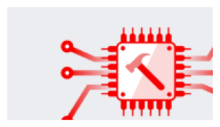
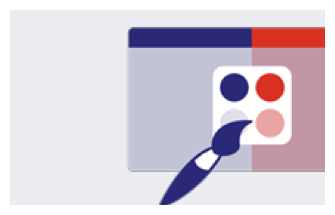
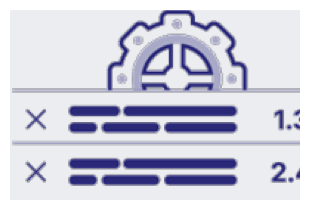

INTEGRATION FLOW
Widget integration and optional deeper integration



1 · INITIAL SETUP
2 · CLIENT · 1–2 DAYS
Client needs to create a pair of RSA keys – Public and Private:
3 · SPORTRADAR · 1 DAY
4 · CLIENT · 1–2 DAYS
5 · SPORTRADAR · FULL INTEGRATION · 1–5 DAYS
Sportradar prepares a data adapter that enables communication between Bet Concierge and the client’s API.
6 · CLIENT · FULL INTEGRATION
Mapping of client match and tournament IDs to Sportradar IDs.
7 · CLIENT · PREMIUM INTEGRATION · 5 DAYS
Custom Bet integration for combo markets.